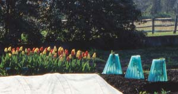

WALTER CHANDOHA
Wall O’ Waters are circular cloches, 18 inches tall and 18 inches wide, made of connected, translucent plastic tubes that you fill with water. They absorb and store daytime warmth and moderate cold while providing dependable wind protection.